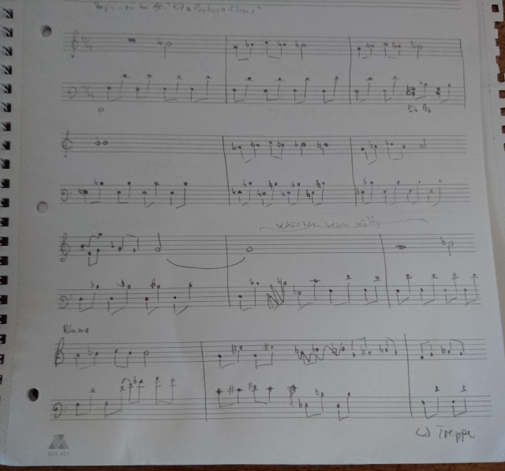
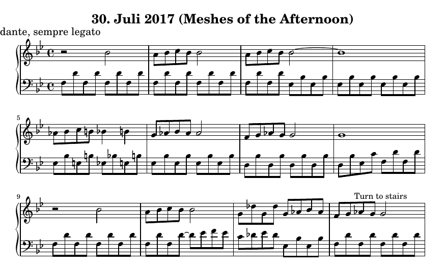

Music OCR: introducing the idea
Sometimes I write my own music. I play the piano (badly), and I’ll never be a great composer, but I find it interesting to play around with melody and chords.
I write notes by hand on paper, and whenever I feel like I’ve got something together, I typeset it using lilypond. That’s a markup format / programming environment for typesetting musical scores, similar in spirit to LaTeX (though LaTeX actually has its own music support via MusicTeX).
My process is clearly a little laborious. Lilypond is pretty cool in terms of the quality of typesetting as well as flexibility and programmability, but it is very much not a wysiwyg environment. I believe people who are more seriously into writing scores use software like Sibelius.
Anyhow, I rather like developing music with pencil and paper. And wouldn’t it be cool if I could take a picture of my handwritten notes on my phone and have a computer read them and generate a typeset file (and even a midi file) for me? So I set to work on that.
I know there are other people working on this. For example, there’s a data set of handwritten music symbols called HOMUS and other related work. It’s obviously not a huge research topic, but work has been done in this space. However, I’m not trying to compete with university researchers; I just want to write some code, learn a few things, see how far I get.
For illustration, here’s a picture of some handwritten notes, taken with my phone:

And here is the same composition typeset with Lilypond (this was done manually, hence the differences in spelling, articulation, etc).

The title is from an experimental short film by Maya Deren which (from what I can tell) seems to be a popular composition assignment.
I do have a background in programming, but I’m really not a computer vision expert, nor do I know much about writing software for mobile phones. For a first stab, I just took a look at OpenCV and decided I’d try to run it on my phone. OpenCV has Android support via JNI. So I went ahead and installed Android Studio with OpenCV and got to work. This was fun and I had some encouraging early results, but it also drew pretty heavily on the battery. So much so that my battery became convex (you do not want your battery to become convex) and I had to replace it. Luckily, this was an older phone, the battery was easy to replace, and I decided to call this a learning experience.
The nice thing about running the entire system on the phone is that it could work offline. You wouldn’t need an internet connection, and you could keep all your data on your phone. However, you’re unlikely to be stuck somewhere with only your phone, some awesome sheet music, and an urgent desire to typeset said sheet music, but absolutely no internet access. Thus it seems like I could run the core processing server-side. This means I have to run a server somewhere, but that’s actually something I know how to do (as opposed to image recognition, mobile software, or indeed composing).
Now the phone app will be just a thin client. It takes the picture and uploads it to a server. The server processes the image and writes a lilypond file. The server then calls lilypond to generate both pdf and midi output files. This can be done by having the server execute a shell command, possibly via an API provider deployed separately (that seems to be what this code does); or I suppose I could look at the Lilypond source code to see how hard it would be to interact with it via library calls. At that point, I’d have to think about licensing implications because Lilypond is GNU, but I don’t mind putting my own code under a GNU license.
I want the server to provide a notification back to the client when the file is ready to view and play. I might be able to do this near-interactively, but (especially if I call lilypond via a shell command, and taking into account the network delay for transmitting the image to the server and sending the pdf and midi files back), latency could be on the order of seconds.
I’ll set the server up so it does not store the images after processing. This is both because storage is expensive and because I don’t want to hang on to my customers’ data. Since I don’t require login credentials or payment details, the security risks seem manageable.
Running the core processing server-side has several advantages: most updates will affect only the server code (much easier than updating a bunch of mobile clients), and I can take advantage of machine-learning models that would be too large to fit onto a phone. Plus I get to use OpenCV in C++ rather than via JNI on Android; C++ is certainly not my most productive language, but it is where you find the best documentation and examples for OpenCV.
As far as overall architecture goes, this should be it. I don’t expect the app to become so popular that I’d have to worry about the max number of concurrent requests I can handle; if that ever does happen, first I’ll celebrate my success, and then I’ll deal with the problem (but I doubt it will happen).
The sample photo I included above demonstrates a lot of what makes this problem hard: the picture is unevenly lit, skewed and warped, it has poor contrast and it has extraneous items (e.g. the punch holes on the left side). The handwriting is poorly formed, the bar lines are not straight, note heads and necks don’t always connect, there’s crossed-out notes, and there’s handwritten words between the lines. In the following posts, I’ll write about the options I’ve found for dealing with these issues; I don’t think I can solve all of them perfectly though, so some of the upcoming decisions are about the user experience when the system cannot quite decide how to interpret your handwriting.